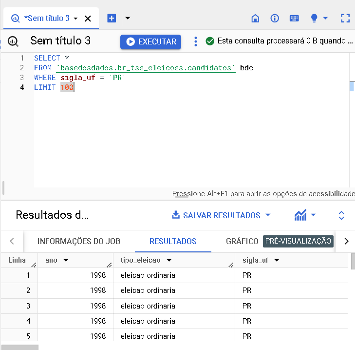

SELECT *
FROM `basedosdados.br_tse_eleicoes.candidatos` bdc
WHERE sigla_uf = "PR"
LIMIT 100

SELECT * FROM `basedosdados.br_tse_eleicoes.candidatos` bdc WHERE sigla_partido = "PT" LIMIT 100
SELECT *
FROM `basedosdados.br_tse_eleicoes.candidatos` bdc
WHERE cargo = "deputado federal"
LIMIT 100
SELECT * FROM `basedosdados.br_tse_eleicoes.candidatos` bdc WHERE idade is not null ORDER BY idade LIMIT 1000
SELECT * FROM `basedosdados.br_tse_eleicoes.candidatos` bdc WHERE idade is not null ORDER BY idade DESC LIMIT 1000
SELECT * FROM `basedosdados.br_tse_eleicoes.candidatos` bdc WHERE instrucao = "ensino superior completo" LIMIT 100
SELECT AVG(idade) FROM `basedosdados.br_tse_eleicoes.candidatos` bdc WHERE sigla_uf = "RJ" LIMIT 100
SELECT COUNT(*) AS numero_de_candidatos FROM basedosdados.br_tse_eleicoes.candidatos WHERE cargo = 'senador' LIMIT 100
SELECT * FROM basedosdados.br_tse_eleicoes.candidatos WHERE sigla_partido = "PMDB" AND sigla_uf = 'PR' LIMIT 100
SELECT * FROM basedosdados.br_tse_eleicoes.candidatos WHERE cargo = 'senador' AND sigla_uf = 'PR' LIMIT 100
SELECT estado_civil, COUNT(*) AS quantidade_de_candidatos FROM basedosdados.br_tse_eleicoes.candidatos GROUP BY estado_civil LIMIT 100
SELECT sigla_partido, AVG(idade) AS idade_media FROM basedosdados.br_tse_eleicoes.candidatos GROUP BY sigla_partido LIMIT 100
SELECT * FROM basedosdados.br_tse_eleicoes.candidatos WHERE email IS NOT NULL LIMIT 100
SELECT * FROM basedosdados.br_tse_eleicoes.bens_candidato WHERE sigla_uf = 'SP' limit 100
SELECT id_candidato_bd, SUM(valor_item) AS soma_valores FROM `basedosdados.br_tse_eleicoes.bens_candidato` GROUP BY id_candidato_bd LIMIT 100
SELECT descricao_item, ano FROM basedosdados.br_tse_eleicoes.bens_candidato WHERE ano = 2022 limit 100
SELECT tipo_item, id_candidato_bd FROM basedosdados.br_tse_eleicoes.bens_candidato WHERE tipo_item = "Casa" OR tipo_item = "Apartamento" limit 100
SELECT AVG(valor_item) AS valor_medio_bens FROM `basedosdados.br_tse_eleicoes.bens_candidato` WHERE id_candidato_bd IN (SELECT id_candidato_bd FROM basedosdados.br_tse_eleicoes.candidatos WHERE numero_partido = '15') LIMIT 100
SELECT * FROM `basedosdados.br_tse_eleicoes.bens_candidato` ORDER BY valor_item DESC LIMIT 10;

SELECT * FROM basedosdados.br_tse_eleicoes.bens_candidato WHERE tipo_item LIKE '%Casa%';

SELECT tipo_eleicao, SUM(valor_item) AS soma_total_bens FROM basedosdados.br_tse_eleicoes.bens_candidato GROUP BY tipo_eleicao LIMIT 100
SELECT * FROM basedosdados.br_tse_eleicoes.bens_candidato WHERE valor_item > 1000000 LIMIT 100
SELECT * FROM basedosdados.br_tse_eleicoes.bens_candidato WHERE valor_item = (SELECT MAX(valor_item) FROM basedosdados.br_tse_eleicoes.bens_candidato) LIMIT 100
SELECT sigla_uf, SUM(valor_item) AS soma_total_bens FROM basedosdados.br_tse_eleicoes.bens_candidato GROUP BY sigla_uf LIMIT 100
SELECT c.id_candidato_bd, c.sigla_uf, bc.descricao_item, bc.valor_item FROM basedosdados.br_tse_eleicoes.candidatos AS c JOIN basedosdados.br_tse_eleicoes.bens_candidato AS bc ON c.id_candidato_bd = bc.id_candidato_bd WHERE bc.valor_item = (SELECT MAX(valor_item) FROM basedosdados.br_tse_eleicoes.bens_candidato WHERE ano = 2022) AND c.ano = 2022 LIMIT 100

SELECT * FROM basedosdados.br_tse_eleicoes.bens_candidato WHERE descricao_item LIKE '%Veículo%' AND sigla_uf = 'MG' LIMIT 100